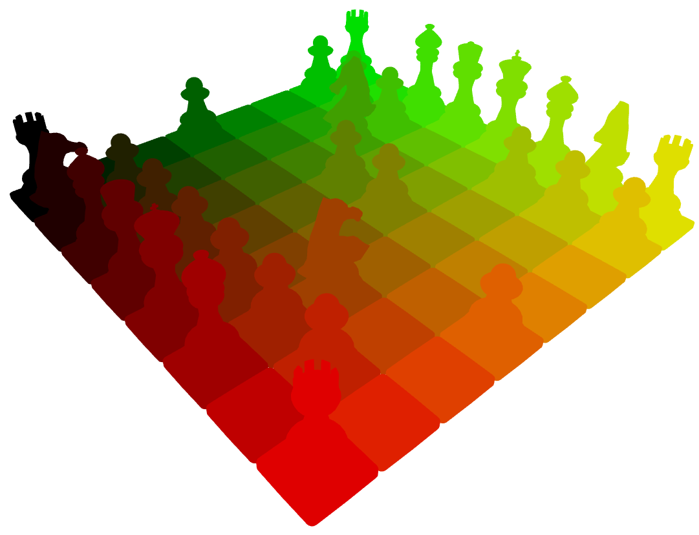

Install CMake, SFML and Stockfish:
sudo apt-get install cmake libsfml-dev stockfish
Install Bullet Physics:
wget https://github.com/bulletphysics/bullet3/archive/2.87.tar.gz
tar -xzf 2.87.tar.gz
cd bullet3-2.87/
mkdir build && cd build && cmake .. -DBUILD_EXTRAS=OFF -DBUILD_BULLET2_DEMOS=OFF -DBUILD_CPU_DEMOS=OFF -DBUILD_OPENGL3_DEMOS=OFF -DBUILD_UNIT_TESTS=OFF -DBUILD_PYBULLET=OFF
sudo make install
cd ..
Download source code:
git clone https://github.com/martinRenou/ToonChess.git
cd ToonChess
Compile ToonChess:
mkdir build && cd build && cmake ..
make
Run it!
./ToonChess
There are already plenty of open-source chess games, so why would I develop my own? I am not even a chess gamer, I am simply interested in real time 3D rendering. Working on this project made me improve on my OpenGL and C++ skills. I also wanted the opportunity to learn tools such as GoogleTest and Cppcheck. And here is the result! Feel free to copy parts of the code for your own OpenGL projects.
I wanted a toon effect for my game, this effect can be performed using the cel-shading technique. Instead of using "normal" lighting, lights are computed using a threshold: if light intensity is more important than this threshold then the 3D-object will be bright and dark otherwise. In ToonChess shaders, I actually used three thresholds, meaning four levels of lighting.
I also wanted to display black borders for chess pieces. In order to explain how I did it I'll have to explain what Backface Culling is. Backface Culling is a step during rendering in which triangles of the mesh are sorted between displayed triangles (visible on the screen) and hidden triangles (not visible because of camera point of view). Hidden triangles are not rendered in order to save computation time. Now, in order to display black borders I chose to display those "hidden triangles" in black and to enlarge them. It results in a nice black border effect, without the need of a filtering step (I could have used a sobel filter for example).
For the shadows I used the well-known Shadow Mapping technique. A separate render is performed using a Render To Texture technique (RTT), in which the distance from the light is saved for each mesh in a texture. (See picture below, the nearer the mesh is from the light, the darker it is in the shadowmap). And this distance from the light can be used in the main rendering process in order to know if the currently rendered part of the mesh is hidden from the light by another object. See
this tutorial if you want to learn more about it. I then used the Percentage Close Filtering technique in order to make the shadows smoother (See this nvidia article about PCF).

Concerning mesh picking, I used a Color Picking technique. When a click event occurs, an other render is performed using a RTT technique, in which meshes are colored according to their positions on the grid (See picture below). The color of the clicked position on the screen is then extracted in order to know which piece on the grid has been selected. This technique is never used in video games, but it perfectly fits my needs for this project. Performances are ok because the RTT is performed only when a click event occurs. 
Developing the AI would have been too much work, and it wasn't the purpose of this project. I chose to use Stockfish for that. Stockfish runs in a subprocess, and communicates with the GUI using the UCI protocol.
I created meshes on Blender and exported them under ".obj" file format.